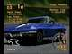

|
Here are a few photo pages I have put together.
They are all vaguely related to
![[Gran Turismo]](../gifs/gtlogosm.jpg) (or auto racing, at least).
(or auto racing, at least).
My Richard Petty Driving Experience
Silly Things Done With a GameShark
A Small GTF Ontario Gathering, June 2001

Corvette'67 Stingray in GT1 Simulation Mode
|